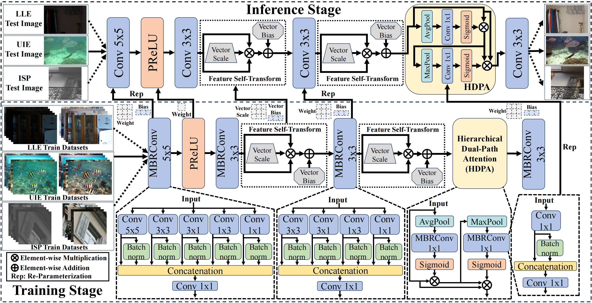

一句话：用“多分支卷积训练 → 单卷积推理”的重参数化思路，把图像增强网络压到 4K 参数，同时靠若干小技巧（IWO、FST、HDPA、LVW 损失）把精度拉回到轻量 SOTA 水平，从而在手机上跑到 1000+ FPS。
和我们的关系：这是一个单张图像模型——每一帧独立处理、没有任何时序建模。把它直接逐帧套用到视频上，相邻帧经过同一网络后细节/亮度跳变不一致，就会出现导师所说的“闪烁”。这正是我们要解决的问题（详见 第 7 节）。
图像增强（Image Enhancement, IE）包括去噪、低光增强、水下增强、ISP（RAW→RGB）等任务。Transformer / Diffusion 类方法效果好，但自注意力和迭代去噪的算力开销让它们无法在手机上实时运行；已有的轻量模型则往往以牺牲质量为代价。
作者观察到一个共性：不同退化类型虽然差异很大，但都需要 全局信息（结构完整）+ 局部细节（纹理恢复）。因此可以设计一套跨任务通用的轻量结构，并通过“训练期复杂、推理期简单”的解耦来兼顾性能与速度。
论文三大贡献：
网络极简，主干只有 4 个卷积性质的部件（训练期是重参数化多分支块）：
ISP 任务略有不同：输入 4 通道 Bayer（RGGB），尾端先 PixelShuffle(2) 再卷积输出 3 通道 RGB。

训练时，每个 MBRConv 并行开 5×5、3×3、1×1、3×1（横向）、1×3（纵向）几个分支，每个分支各跑一次卷积；同一个卷积的结果既直接拼接、又过一层 BN 后拼接（相当于“原始特征 + 平滑特征”），再用一个 1×1 卷积把所有分支加权压缩回 C 通道。
推理时，所有这些分支（普通卷积、1×1 卷积、以及带 BN 的卷积）都可以通过“卷积与 BN 的线性折叠”合并成同一个 3×3 卷积——因为 1×1 核可以补零成 3×3，3×1/1×3 也可以补零成 3×3。合并后结构就是普通 Conv3×3，手机端毫无额外开销。
# model/utils.py · MBRConv3.forward（训练期分支）
x = cat([conv(inp), conv1(inp), conv_crossh(inp), conv_crossv(inp),
bn(conv(inp)), bn1(conv1(inp)),
bn_h(cross_h(inp)), bn_v(cross_v(inp))], dim=1)
out = conv_out(x) # 1×1 压缩回 C 通道
# model/utils.py · MBRConv3.slim（推理期融合）
# 每个分支先做 BN 折叠：W' = W * γ/σ, b' = (b - μ) * γ/σ + β
# 1×1/3×1/1×3 分支补零扩到 3×3，再全部相加 → 单个卷积小模型训练到后期会停滞。IWO 的做法：先正常训练到一定阶段，把此时的 1×1 融合层权重 W_pre 冻结，再外挂一个可学习增量 W_learn，前向用 W_final = W_pre + W_learn。于是模型是“在已有知识上做增量修补”，而非从零重学。
# model/utils_IWO.py
self.conv_out.weight.requires_grad = False # 冻结 W_pre
self.weight1 = nn.Parameter(torch.zeros_like(self.conv_out.weight))
...
final_weight = self.conv_out.weight + self.weight1 # W_pre + W_learnmodel/utils_IWO.py 没有被任何代码 import（model/lle.py、model/isp.py 都只导入 utils）。也就是说 IWO 在发布版训练脚本中默认未启用，需要用 IWO 版本替换 utils 并在第 1000 epoch 后启用。这一点是复现时性能差异的常见来源。
线性卷积表达力有限。FST 让特征自己和自己做二次交互：
FST(x) = Scale · (x ⊙ x) + bias # 论文式(3)
# 代码实现为两个标量参数相乘：(w1·x) ⊙ (w2·x) + bias，等价于 (w1·w2)·x² + bias平方操作在频域上增强高频响应，比 ReLU 更利于保留细节和边缘；两个可学习标量 + 逐通道 bias 只有极少参数。
用两路极简注意力分别抓全局和局部：
A_g = Sigmoid( MBRConv1x1( AvgPool(F) ) ) # 全局：通道注意力
A_l = Sigmoid( MBRConv1x1( MaxPool(F ⊙ A_g) ) ) # 局部：在全局增强后做空间最大值池化
F̂ = (A_g ⊙ A_l) ⊙ F # 双路相乘再调制特征比 SE、CBAM 更轻，而且 MBRConv1x1 推理时同样折叠成 1×1 卷积。
4K 参数的模型对极端像素非常敏感，L1 对所有像素一视同仁，L2 又容易被离群点带偏。LVW 给每个像素误差乘一个基于局部方差的自适应权重（误差离均值越远权重越大，用 tanh 饱和防止失控）：
# loss.py · OutlierAwareLoss
delta = out - gt
var = delta.std((2,3), keepdim=True) / sqrt(2)
avg = delta.mean((2,3), keepdim=True)
w = tanh(|delta - avg| / (var + 1e-6)).detach()
loss = mean(|delta| * w)实际训练用的组合损失是 LVW + (1 - CosineSimilarity) + 2 × PSNR 损失。
main.py 里训练分三段（对应 train()）：
DropBlock 随机块遮挡，用两个同构输出头分别拟合“原输入”和“GT”，让网络先学会基础映射；model_best.pkl；net.slim() 把多分支折叠成单卷积，保存 model_best_slim.pkl——这就是部署用的权重。Adam、weight_decay=0、batch=4（LLE）；ISP 输入按 256×256 Bayer 预处理，batch=6。
| 方法 | 参数量 | GPU 延迟 | 手机延迟 | LOLv1 PSNR | LOLv2-R PSNR |
|---|---|---|---|---|---|
| IAT (BMVC'22) | 86.9K | 6.204 ms | 202.33 ms | 23.38 | 25.46 |
| SYELLE (ICCV'23) | 5.3K | 0.944 ms | 7.73 ms | 21.03 | 21.26 |
| Zero-DCE++ | 10.6K | 1.974 ms | 57.91 ms | 14.68 | 17.23 |
| MobileIE | 4.0K | 0.895 ms | 6.72 ms | 23.62 | 25.08 |
相比 IAT：参数仅 4.7%，推理快 6.9×，PSNR 相当或更好。
| 方法 | 参数量 | 手机延迟 | PSNR | SSIM |
|---|---|---|---|---|
| FiveA+ | 9.0K | 423.43 ms | 22.51 | 0.902 |
| Boths | 6.4K | 58.04 ms | 22.23 | 0.904 |
| MobileIE | 4.0K | 8.94 ms | 22.81 | 0.906 |
| 方法 | 参数量 | GPU 延迟 | 手机延迟 | PSNR | SSIM |
|---|---|---|---|---|---|
| LiteISP (ICCV'21) | 11,900 | 46.326 ms | >500 ms | 21.28 | 0.739 |
| SYEISP (ICCV'23) | 5,616 | 1.156 ms | 16.47 ms | 20.84 | 0.728 |
| MobileIE | 4,104 | 1.020 ms | 14.40 ms | 21.43 | 0.731 |
评测硬件：单卡 NVIDIA 4090（GPU 延迟）；手机 SoC 为骁龙 8 Gen 3（TFLite 推理）。
仓库：github.com/AVC2-UESTC/MobileIE（已克隆至 research/2.reproduction/MobileIE），纯 PyTorch，无 requirements.txt。
| 路径 | 作用 | 阅读优先级 |
|---|---|---|
model/lle.py | 低光增强网络：MobileIELLENet（训练态多分支）与 MobileIELLENetS（推理态单卷积），含 slim() 重参数化 | 必读 |
model/utils.py | MBRConv5/3/1、FST、FSTS、DropBlock 及各自的 slim() 融合实现 | 必读 |
model/isp.py | ISP 版本（4 通道输入 + PixelShuffle 尾端） | 选读 |
loss.py | Charbonnier / Charbonnier+余弦相似度的 warm-up 损失、LVW（OutlierAwareLoss）、PSNRLoss | 必读 |
main.py | train / test / demo 三个入口；warm-up → 主训练 → best 与 slim 权重保存 | 必读 |
option.py | 命令行参数与 yaml 配置加载，自动创建 experiments/<时间戳>_<任务> 目录 | 选读 |
config/lle.yaml、config/isp.yaml | 数据路径、训练超参、type: original|re-parameterized、need_slim | 必读 |
data/ | LLEData（RGB 图对）/ ISPData（Bayer→RGGB 打包、/4095 归一化） | 选读 |
pretrain/ | 5 个已重参数化的 slim 权重（lolv1、lolv2_real、uieb、zrr、mai25_isp_challenge）+ 一个 onnx/tflite | 部署用 |
torch_to_onnx.py → onnx_to_tf.py → tf_to_TFLite.py | 转换链，最终得到手机端 tflite | 选读 |
test_TFLite_RGB.py / test_TFLite_ISP.py | 用 TensorFlow Lite 解释器跑本地推理 | 选读 |
model/utils_IWO.py | IWO 版 MBRConv（默认未被引用，见 2.3） | 注意 |
complexity.py | FLOPs / FPS 测量，但引用了不存在的 lle.MobileIES，需修正后可用 | 注意 |
pretrain/*_best_slim.pkl 是重参数化后的权重，必须配 type: re-parameterized + need_slim: true 使用（对应 MobileIELLENetS 类）；若用 type: original 则需要多分支训练权重。main.py 第 12 行 os.environ['CUDA_VISIBLE_DEVICES'] = '5'，单卡机器上会看不到 GPU，需改成 '0' 或删除。./lowlight/... 只是作者机器上的路径。utils_IWO.py，想要论文同款需自行接入（且论文描述是在第 1000 epoch 后启用）。onnx2tflite。main.py test()），SSIM/LPIPS 需自行补计算。MobileIE 的设计目标始终是单张图像：训练数据是静止图对，损失是逐像素/逐图统计，网络结构里没有任何跨帧信息通路（没有循环、没有光流、没有时序缓存）。把它直接用于视频时，每一帧都被当成孤立图像独立增强，于是：
research/2.reproduction/MobileIE）本报告基于论文（arXiv v1）与官方代码整理，标注“代码实现”的内容以仓库实际代码为准；论文与代码不一致处已在正文中注明。